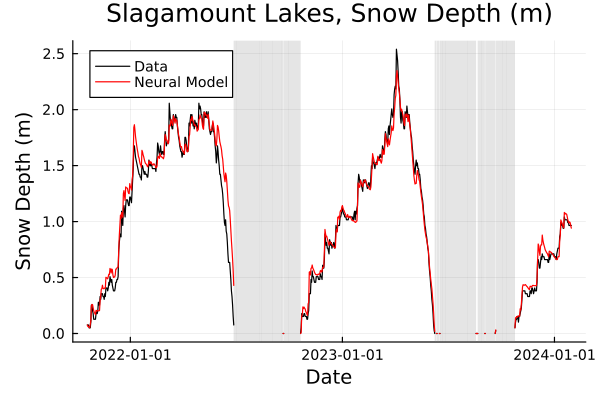
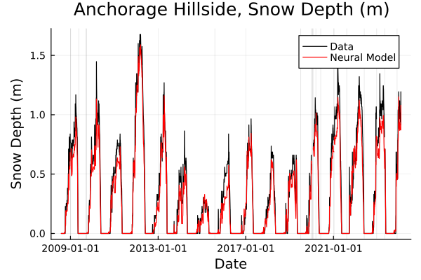

ConstrainedNeuralModels: Generating Seasonal Snow Timeseries with a Constrained Neural Network
This tutorial gives an example of how to use the ConstrainedNeuralModels module to forecast seasonal snow depth evolution, using a predictive model with structurally-enforced constraints. The following steps through a basic use-case of the module on an already-cleaned dataset, though exploration of the optional arguments in the data scraping tools (explained in the data tutorial) allow for additional functionality. The ConstrainedNeuralModels module can also be used to develop models for other systems, like the NeuralAlbedoModel used in ClimaLand (source code).
Model Equation:
The updates of the neural snow depth model follow the equation
$\frac{dz}{dt} = \mathcal{M}\left(z, SWE, φ, R, v, T_{air}, P_{snow}\right),$
where
$t$ is the time (s),
$z$ is the snow depth (m),
$\mathcal{M}$ is the neural network,
$SWE$ is the Snow Water Equivalent, or the height of water if all the snow melted (m),
$φ$ is the relative humidity (0-1),
$R$ is the solar radiation (W/m²).
$v$ is the wind speed (W/m²).
$T_{air}$ is the air temperature (degrees C).
$P_{snow}$ is the water equivalent rate of snow precipitation (m/s).
The model is a 1D model, to permit utilization over any desired grid resolution and shape.
We will use the forcings and snow depth data as a validation of the model, so the initial conditions will be the initial value provided in the existing data.
Setup:
We begin by importing the developed code to create and run the neural network, as well as some preliminary packages:
using ClimaLand
using DataFrames, Dates, Statistics, Downloads #dependencies for the SNOTEL Scraper extension
using Flux, StaticArrays, JLD2, InteractiveUtils #dependencies for the ConstrainedNeuralModel extensionThe code lives in an extenson that we have to manually load. The extension can be loaded only if its package dependencies and ClimaLand are loaded.
DataTools = Base.get_extension(ClimaLand, :SNOTELScraperExt).DataTools
ConstrainedNeuralModelExt =
Base.get_extension(ClimaLand, :ConstrainedNeuralModelExt)
using .ConstrainedNeuralModelExt.ConstrainedNeuralModels
CNM = ConstrainedNeuralModels; #for referring to internal functions with less typing!Depending on personal preference, you could also do CNM = Base.get_extension(...[same thing]...).ConstrainedNeuralModels and skip the "using" statement, like how DataTools was handled, though you would instead need to add "CNM." in front of each appropriate function/macro.
For this tutorial, we also include some purpose-made functions for displaying the output and building our loss function:
code_dir = joinpath(pkgdir(ClimaLand), "docs/src/tutorials/standalone/Snow")
include(joinpath(code_dir, "tutorial_tools.jl"));Data Preparation:
We next read in the already-cleaned training and testing datasets, though for custom datasets there is plenty of functionality provided in the DataTools module to scrape SNOTEL data directly. We also set the unit timestep seen in this data (daily, so 1 day) to be used for setting the network's constraints as well as generating timeseries during usage. To see the code that generated the training data file, check out the data tutorial. We also specify the maximum gap size in the data (in units of Δt) that the network can traverse before requiring a reset, via hole_thresh, and pick the float-type as Float32.
training_data_download_link = "https://caltech.box.com/shared/static/1gfyh71c44ljzb9xbnza3lbzj6p9723x.csv"
testing_data_download_link = "https://caltech.box.com/shared/static/qb2ze1wcc1a37fgt5k9wsj27gpoh39ax.csv"
data_train = DataTools.df_from_url(training_data_download_link) # If using the CSV and HTTP modules, you could also use:
valdata = DataTools.df_from_url(testing_data_download_link) # CSV.read(HTTP.get(testing_data_download_link).body, DataFrame)
FT = Float32
Δt = Second(86400)
hole_thresh = 5;With the data now loaded, we use the prep_data function to split the precipitation feature into rain and snow constituents with a logistical model of air temperature and humidity, apply a set of training-applicable filters, and extract the necessary features with prep_data (the precipitation split already exists in the testing data):
usedata = DataTools.prep_data(data_train);We next outline which variables in the dataset will be used as predictors, calling them by their column name as a Symbol. The number and choice of these can be changed to reflect any dataset. Another column is specified as the target variable, in this case, the $\frac{dz}{dt}$ column.
pred_vars = [
:z,
:SWE,
:rel_hum_avg,
:sol_rad_avg,
:wind_speed_avg,
:air_temp_avg,
:dprecipdt_snow,
]
target = :dzdt;After this, we determine scalings for the input and target data that are conducive to beneficial weight updates. For this tutorial, the target data during training will be scaled in the -1 to 1 range, and the neural network will scale input features according to their standard deviations (no shifting is carried out, so that the physical meaning of "0" is preserved). This data is then converted into Matrix form for ease of its conversion into a Flux DataLoader object later. The DataTools module contains a function make_data to handle this for you directly from a DataFrame, which extracts the pertinent variables,scales the target appropriately by out_scale, and returns the data Matrix:
out_scale = FT.(maximum(abs.(usedata[!, target])))
in_scales = FT.(1 ./ std.(eachcol(select(usedata, pred_vars))))
x_train, y_train = DataTools.make_data(usedata, pred_vars, target, out_scale);Model Setup:
When using the ConstrainedNeuralModels module, to create a constrained neural model, one only needs to specify the desired predictive model, and the constraint functions to constrain it.
The Model:
First, we set up values of the predictive network's hyperparameters, the width parameter $n$ as outlined in the associated paper Charbonneau et al. [20], and the two loss function hyperparameters $n_1$, $n_2$.
n = 4
n1 = 2
n2 = 4;Specifying the indices of the depth and precipitation variables (used in the constraints) and the total number of input features will be useful when creating the model, so we will specify them here as well.
nfeatures = length(pred_vars)
const z_idx::Int = 1
const p_idx::Int = 7;We then specify the internal predictive component of our constrained network, a small feed-forward neural network (a Flux.Chain) of 3 Dense layers. This internal prediction model need not be a Flux.Chain or even a neural network - it can take any form/size/complexity you like (including other custom-built functions and layers), as long as it is a valid functor with a defined input function (model::MyFunction)(x).
pred_model = Chain(
l1 = Dense(nfeatures, nfeatures * n, relu),
l2 = Dense(nfeatures * n, nfeatures, elu),
l3 = Dense(nfeatures, 1),
);The Constraints:
Constraint Types -
Constraint functions must only take two arguments, pred (the output of the predictive model) and input (the input to the predictive model), and have a declared output type. Explicitly supported constraint types can be classified as static (fixed models, for optimal performance when applying them in simulations on GPUs) or dynamic (mutable models where weights can be changed, for training or prototyping) types, as well as batched or single evaluation modes, based on declared arg/return types:
| :dynamic Mode | :single | :batched |
|---|---|---|
pred::T1 | T1 <: Vector{FT} (length 1) | T1 <: Matrix{FT} (size (1, N)) |
input::T2 | T2 <: AbstractArray{FT} | T2 <: AbstractArray{FT} |
| return | ::FT | ::T1 |
| :static Mode | :single | :batched |
|---|---|---|
pred::T1 | T1 >: SVector{1, FT} | T1 >: SMatrix{1, N, FT, N} where {N<:Int} |
input::T2 | T2 <: StaticArray{S, FT} where {S} | T2 <: StaticArray{S, FT} where {S} |
| return | ::FT | ::T1 |
In all cells above, a where {FT<:AbstractFloat} is implied to indicate that the eltype of pred and input and the function return must be the same. T1, T2 do not need to be specified in the function identical to the above, but are shown to indicate viable types for each class. Anything not satisfying the table above is considered a :generic type, which depending on the construction might not find full support in this module.
:genericMode: If creating:genericconstraints, to avoid issues we recommend:
- The predictive model output a scalar (float), or a type satisfying
<: VecOrMat{FT}in a flattened row-like manner, (e.g., a length-1Vector, or a single-row 1×NMatrix, instead of column (N×1, or like a length-NVector) or many-dimension types.- The constraint function be able to handle the input and output types of your predictive model, and output a similar type to that of the predictive model
- The
eltypeof the predictive model input, output, and constraint model output be the same.
Constraint Functionality -
The internals of constraint functions do not truly matter as long as the output configuration is compliant and eltypes are consistent, enabling a wide variety of possible functions. Functions that require additional parameters, or are a function of external data, etc., are also possible though the creation of functor methods (create a type MyType with the necessary fields, and create a functor method function (x::MyType)(pred, input) that calls on and makes use of the necessary internal fields; an example is provided below).
For optimal performance on GPUs when creating static methods, we recommend minimizing or eliminating any allocations in your functional form. If supplying both an upper and a lower bound as your constraints, for any given input x the value of the upper bound function at xmust be greater or equal to the value of the lower bound function at x, though this does not necessarily mean that the upper bound at any input x must be higher than the lower bound at any other input y!=x.
MORE THAN 1D?: This tutorial details a case study for the creation of a 1D model with small
Vectorinputs, however,ConstrainedNeuralModelscan be used for multidimensional inputs and outputs as well (CNN's on images/tensors, etc.) - just make sure to have a flattening layer/operation at the end of your prediction model to send all outputs to a 1×NMatrix(and a corresponding flattening/ordering inside of your constraint functions), with compliant constraint functions, and a restructuring operation after the output of theConstrainedNeuralModel.
Function-type Constraint Example -
For our snow depth model, we pick an upper boundary function that leaves the prediction unchanged if snowfall is present, but clamps the prediction to be nonpositive if no snowfall is present. We also pick a lower boundary boundary defining $\frac{dz}{dt} \leq -z/Δt$ to prevent the snowpack from ever becoming a negative value.
It is not required, but one can declare bound methods with the @bound macro from ConstrainedNeuralModels, which runs some automated function compliance checks to ensure its usability within ClimaLand, and stores any function information useful for generating metadata when saving a ConstrainedNeuralModel. In this case, the below initial attempt will be deemed :generic bounds that are supported by the module - they work for our Flux.Chain predictive network both when receiving either single (Vector input, outputting Vector) or batched (Matrix input, outputting Matrix) inputs, (This is a good first start for prototyping, but we could do more to optimize performance):
@bound function upper_bound(
pred::AbstractArray{T},
input::AbstractArray{T},
)::AbstractArray{T} where {T <: AbstractFloat}
return @. (input[p_idx:p_idx, :] > 0) * relu(pred) #outputs as a row Matrix, could do input[p_idx, :]' instead
end
const dt::Float32 = FT(Dates.value(Δt))
@bound function lower_bound(
pred::AbstractArray{T},
input::AbstractArray{T},
)::AbstractArray{T} where {T <: AbstractFloat}
return -input[z_idx, :]' ./ dt #outputs as a row matrix
endThe functions here are specified with argtypes AND return types of AbstractArray{T} instead of each being specified as AbstractArray{<:AbstractFloat}, so that the compiler knows all arg and return types will have the SAME float-type. Failing to specify this way can result in an immense slow-downs during gradient-based training.
Functor-type Constraint Example -
For this tutorial, the feature indices are known beforehand and hard-coded as constants so that our :generic function definition is compiled equivalently to writing input[1, :]' or input[7:7, :]. In general, constraint functions do not have to index into pred or input (or even use them at all), and functions including any variables defined in global scope are fine. However, it is often better practice to define these as functor methods over a custom type, storing all necessary information in a more performance-optimized manner. For example, we could have declared the below for the lower bound instead. Like the @bound macro, we could optionally declare our custom constraint type with the ConstrainedNeuralModels @bound_type macro, to store useful metadata:
# Declare the type:
@bound_type struct SDLowerBound{FT <: AbstractFloat}
z_idx::Int
negative_one_over_Δt::Ref{FT} #reduces cost, reducing all operations to one multiplication
end
# A constructor
function make_lower_bound(FT::Type{<:AbstractFloat}, z_idx::Int, Δt::Period)
return SDLowerBound{FT}(z_idx, Ref(FT(-1 / Dates.value(Dates.Second(Δt)))))
end
# Could dispatch on type: here is a :batched dynamic version
@bound function (b::SDLowerBound)(
pred::Matrix{T},
input::Matrix{T},
)::Matrix{T} where {T <: AbstractFloat}
return b.negative_one_over_Δt * view(input, (b.z_idx):(b.z_idx), :)
end
# and a :single dynamic version
@bound function (b::SDLowerBound)(
pred::Vector{T},
input::Vector{T},
)::T where {T <: AbstractFloat}
return b.negative_one_over_Δt * input[b.z_idx]
end
# could also make additional methods to interact with the bound and set the time-step value:
function set_time_step!(b::SDLowerBound{T}, dt::Real) where {T <: AbstractFloat}
b.negative_one_over_Δt[] = T(-1 / dt)
end
# Create an instance of the custom bound functor type:
lowerb = make_lower_bound(Float32, z_idx, Δt);With functor constraints, the possibilities of constraints for ConstrainedNeuralModels is greatly expanded, with virtually no limits to the types of data, mutable or fixed types, parameters, and additional methods (e.g., like set_time_step!(), so it could be altered before/during/after training) for abstract constraint functionality and form. In this case, we suggest such additional methods are well-documented, so that if using @bound and @bound_type their internals can be made explicit and reproducible upon saving/transfering the ConstrainedNeuralModel to another system (see below).
Creating and Training a ConstrainedNeuralModel:
We then create the ConstrainedNeuralModel, by specifying a float-type for the model (Float32 will run faster than Float64), and create the model by specifying the predictive component, any upper or lower boundary constraints, and the input and/or output scaling:
model = ConstrainedNeuralModel(
FT,
pred_model,
upper_bound = upper_bound,
lower_bound = lower_bound, #or `lowerb`
in_scales = in_scales,
out_scale = out_scale,
)ConstrainedNeuralModel(
Chain(
l1 = Dense(7 => 28, relu), # 224 parameters
l2 = Dense(28 => 7, elu), # 203 parameters
l3 = Dense(7 => 1), # 8 parameters
),
) # Total: 6 trainable arrays, 435 parameters,
# plus 6 non-trainable, 56 parameters, summarysize 2.559 KiB.In general, the minimal construction of a ConstrainedNeuralModel requires only a float type and predictive model, and at least one of either a lower or upper bound constraint (a function or an instance of a functor type). Input and output scaling are optional, as well as the option for custom fixed layers, or an additional trainable_constraints argument (default: false; can be changed to true) that allows the parameters of a supplied functor bound to be trained simultaneously alongside the network.
For trainable constraints, make sure the Flux.trainable() function is defined for your bound functor type.
For this model, the returned ConstrainedNeuralModel will use a default set of fixed layers to apply the constraint functions to the predictive model in a scalable manner. As is discussed in the Charbonneau et al. [20] paper, for certain types of boundary functions, these fixed layers can be simplified to further reduce computational cost. Custom fixed layers can be specified via the fixed_layers argument, taking a Flux.Chain of Dense layers with relu activation (for an example, load the actual NeuralDepthModel used in the NeuralSnow extension for ClimaLand.Snow).
As training updates are better with the scaled data, we can put a ConstrainedNeuralModel into :scaled_train mode, which maintains the output scaling with regards to how predicted values as they are passed to the constraint functions, but rescales the final output as if there was no output scaling (this corresponds to our scaling of y_train to be within -1 to 1 as well):
scale_model!(model, :scaled_train);We define the loss function as defined in Charbonneau et al. [20], taking an input of a model, x, and y, e.g. loss(m, x, y) = sum(abs.(m(x) .- y)):
loss(_model, x, y) = custom_loss(x, y, _model, n1, n2); #in "docs/src/tutorials/standalone/Snow/tutorial_tools.jl"With that, training is as simple as calling the trainmodel! function:
print("\nTraining model!\n")
trainmodel!(model, x_train, y_train, loss, nbatch = 256, verbose = true);
Training model!
Epoch: 10 | training loss: 0.0027834391
Epoch: 20 | training loss: 0.0027780344
Epoch: 30 | training loss: 0.0028270262
Epoch: 40 | training loss: 0.0027434342
Epoch: 50 | training loss: 0.0028260131
Epoch: 60 | training loss: 0.0026030457
Epoch: 70 | training loss: 0.0027000855
Epoch: 80 | training loss: 0.0025868127
Epoch: 90 | training loss: 0.0025806718
Epoch: 100 | training loss: 0.0025885638
To show the model's output on some of our training data in physically meaningful units, we first reset the model back from its :scaled_train mode.
scale_model!(model, :reset);Results:
We make use of the make_timeseries() function defined for this tutorial, which allows us to pass the model a dataframe for a given SNOTEL site, and compare the result to actual data.
For instance, let's show the results on SNOTEL site 1286 (Slagamount Lakes site, Montana):
Note that gaps in the data are shown as shaded regions on the plotted timeseries.
site_id = 1286
sitedata = usedata[usedata[!, :id] .== site_id, :]
true_series = sitedata[!, :z]
pred_series, _, _ =
make_timeseries(model, sitedata, Δt, hole_thresh = hole_thresh)
ptitle = "Slagamount Lakes, Snow Depth (m)"
siteplot(
ptitle,
sitedata[!, :date],
[true_series, pred_series],
["Data", "Neural Model"],
[:black, :red],
savename = "base_tutorial_plot1.png",
display_plot = false,
);GKS: cannot open display - headless operation mode active

Or, alternatively, SNOTEL site 1070 (Anchorage Hillside, Alaska) from the testing data:
site_id = 1070
sitedata = valdata[valdata[!, :id] .== site_id, :]
true_series = sitedata[!, :z]
pred_series, _, _ =
make_timeseries(model, sitedata, Δt, hole_thresh = hole_thresh)
ptitle = "Anchorage Hillside, Snow Depth (m)"
siteplot(
ptitle,
sitedata[!, :date],
[true_series, pred_series],
["Data", "Neural Model"],
[:black, :red],
savename = "base_tutorial_plot2.png",
display_plot = false,
);
Creating timeseries for other datasets/systems with other models can be handled with a similar call to this tutorial's make_timeseries() function. In this system, the timestep Δt could also be changed to different values to evaluate the network's capability on validation data with different temporal resolutions, without the need for retraining of the predictive network (or, for a SDLowerBound constraint, changing the timescale on-the-fly).
Saving and Loading Models:
The save_model() function can be used to save a ConstrainedNeuralModel to two JLD2 files, one for its structure and one for its weights. Models can be loaded using the load_model() functionality, which combines a model structure file with a provided vector of model parameters. The structure-parameter split is deliberate to allow online tuning of models within a larger model ensemble. The parameter and structure files for the neural networks used in ClimaLand.Snow are stored ClimaLand artifacts, or are human-readable at the hyperlinks for the $z$ network and $SWE$ network utilized in Charbonneau et al. [20]. Note that the SWE network uses n=5 instead of the snow depth n=4.
Model Metadata:
For storing model information in a save-file for a ConstrainedNeuralModel, custom metadata can be passed as a String to the save_model() function via the optional user_param_metadata and user_model_metadata arguments. To aid in this, the build_model_bound_documentation() and build_model_API() functions also exist, if you have chosen to specify your bound methods/types with the @bound and/or @bound_type macros.
build_model_bound_documentation() generates a metadata string containing the actual code syntax for constraints defined with the macros, and other model metadata, to aid in reproducibility and transferability across systems and codespaces.
build_model_API() will also construct an API (but not the actual code syntax; this property is exclusive only for code specified with the @bound and @bound_type macros) of any methods related to utilized custom bound functor types, or types/methods/modules utilized by the ConstrainedNeuralModel that are not already available in ClimaLand. This is to aid in reproducibility on other systems, even if the original script to generate the model is lost, as associated documentation is also captured.
Since build_model_API() captures documentation strings, pasting the code syntax into the documentation of custom methods/types mostly mitigates reproducibility concerns.
For loading models, all necessary methods/types for the desired ConstrainedNeuralModel must already be loaded into the codespace when load_model() is called. To aid in this, one can use inspect_model_metadata() on the loaded model data object to print any model metadata.
This page was generated using Literate.jl.